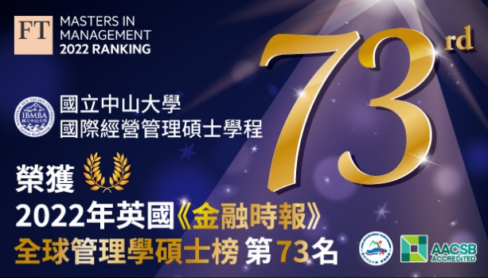

焦點新聞
-

中山IBMBA第73名蟬聯全台獨辦碩班冠軍 -

中山管院-嚴重特殊傳染性肺炎資訊平台 -

111年度管院傑出校友出爐!實至名歸!
系所學程
-
中山管理學院
EMBA - 中山大學管理學院
全英研究所/學士班 - 企業管理學系
研究所/學士班 - 資訊管理學系
研究所/學士班 - 財務管理學系
研究所/學士班 - 公共事務管理
研究所 - 人力資源管理
研究所 - 行銷傳播管理
研究所
教育目標
本院願景：卓越研究、教學、社會與實務影響力成為全球認可之管理學院。
- 發展優質研究環境：促進並維持管院優質學術環境，鼓勵教師與國際學者合作
- 鼓勵教學創新與多元文化學習：透過卓越教學方法，使學生具備創新能力、批判性思考及自我反思。
- 推動社會關懷與發揮影響力：提升社會關懷及社會參與，培養學生ESG的社會責任。

©國立中山大學管理學院 版權所有